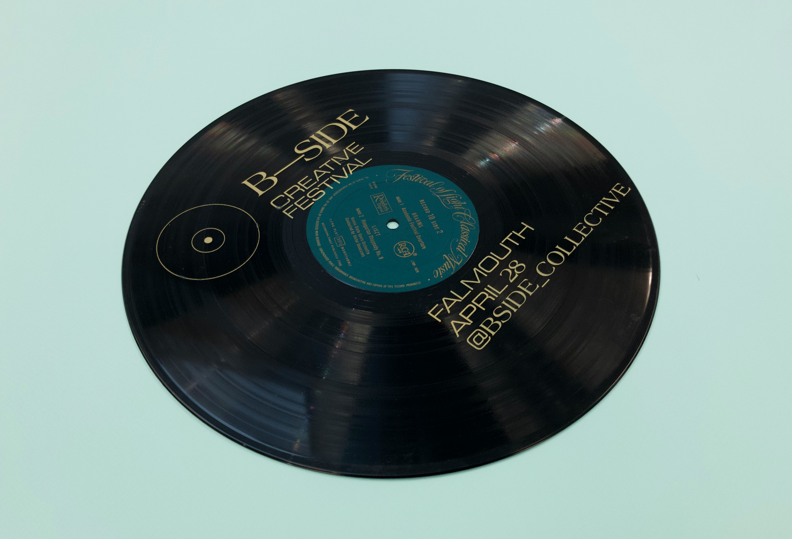
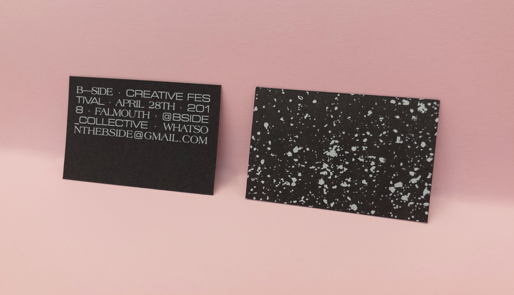

A festival of underground creative works (2018)
The B-Side was a collective organised by Photography and Events Management students at Falmouth University. I designed their visual identity in the leadup to their first major event, the B-Side Creative Festival.

Posters · Screen-printed onto the b-sides of vinyl records.

Business Card/Flyer · White ink on 300gsm black cardstock.